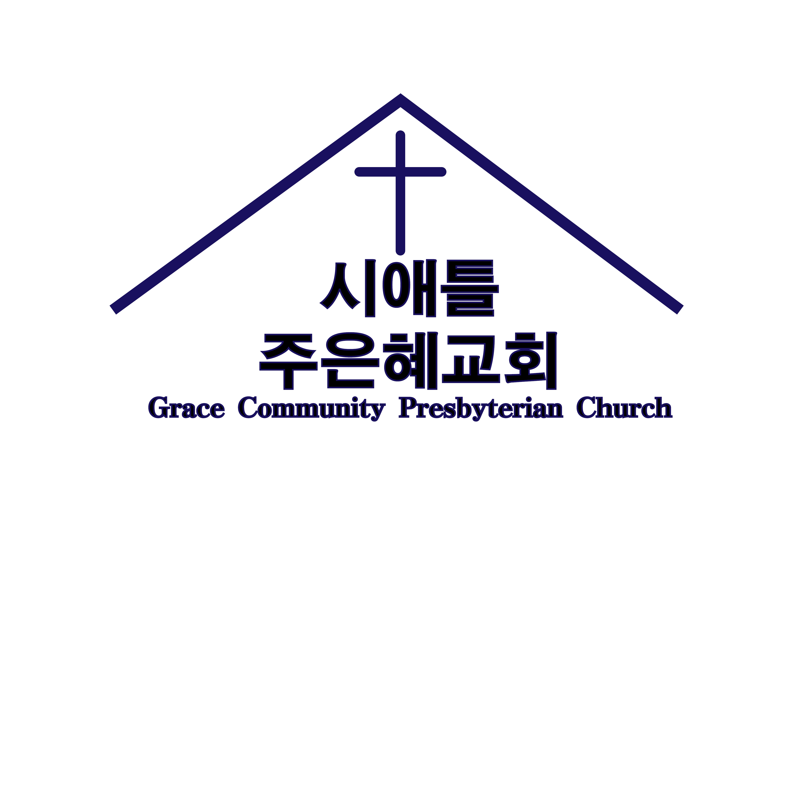

주일예배
Sunday worship
오후 1:00
1:00 p.m.
한국어 · 린우드 · 소예배실
Korean · Lynnwood · chapel
수채화: 시애틀 가을, 국화와 복숭아빛 장미

수채화 · 가을 · 린우드 Watercolor · Autumn · Lynnwood
GCPC
Grace Community Presbyterian Church - Seattle
그러나 내가 나 된 것은 하나님의 은혜로 된 것이니
But by the grace of God I am what I am
고린도전서 15:10 1 Corinthians 15:10
오직 하나님의 은혜라는 고백 위에 세워진 린우드의 한인 교회입니다. 주일 오후 1시, Renew Church 소예배실에서 한국어로 예배합니다.
A Korean congregation in Lynnwood, built on the confession that it is only by the grace of God. We worship in Korean at 1:00 p.m. on Sundays in the Renew Church chapel — not the main sanctuary.
오후 1:00
1:00 p.m.
한국어 · 린우드 · 소예배실
Korean · Lynnwood · chapel
7:30–9:00
같은 건물
Same building
첫째 주일
First Sunday
매월 주일예배 때
During Sunday worship each month
예배는 Renew Church 소예배실에서 드립니다. 같은 건물의 영어권 교회(주일 오전 10시 본당)와는 다른 공동체입니다.
We meet in the Renew Church chapel. That campus also hosts Renew Church, a different congregation (Sunday 10:00 a.m. in the main sanctuary).
2721 164th St. SW, Lynnwood, WA 98087
제목은 유튜브에 올라온 그대로입니다. 영어 번역은 올리지 않습니다.
Titles are shown as published in Korean. We do not machine-translate sermons.